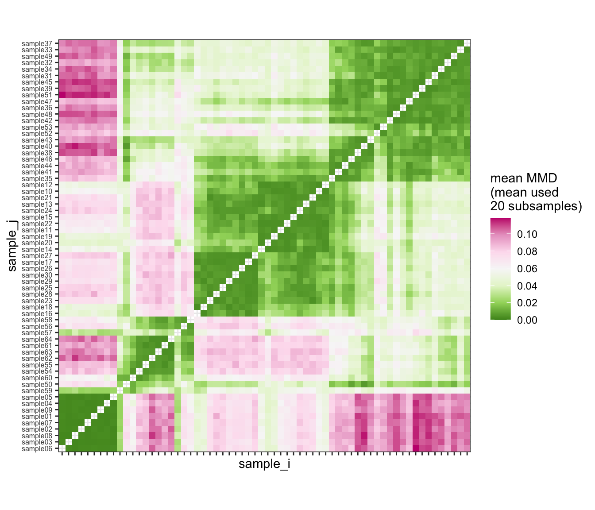
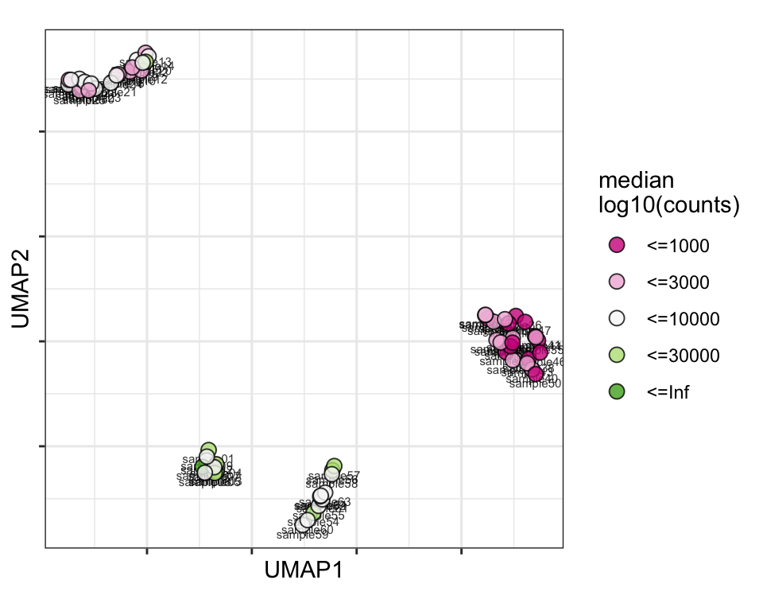
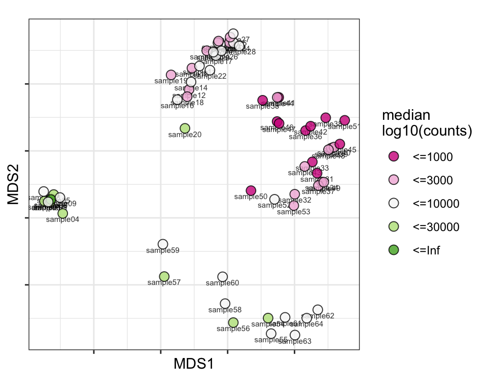

SampleQC: Plots for paper based on simulations
Will Macnair
Institute for Molecular Life Sciences, University of Zurich, SwitzerlandSwiss Institute of Bioinformatics (SIB), University of Zurich, SwitzerlandFebruary 12, 2022
Last updated: 2022-02-12
Checks: 5 2
Knit directory: SampleQC_paper_analyses/
This reproducible R Markdown analysis was created with workflowr (version 1.7.0). The Checks tab describes the reproducibility checks that were applied when the results were created. The Past versions tab lists the development history.
The R Markdown file has unstaged changes. To know which version of
the R Markdown file created these results, you’ll want to first commit
it to the Git repo. If you’re still working on the analysis, you can
ignore this warning. When you’re finished, you can run
wflow_publish to commit the R Markdown file and build the
HTML.
The global environment had objects present when the code in the R
Markdown file was run. These objects can affect the analysis in your R
Markdown file in unknown ways. For reproduciblity it’s best to always
run the code in an empty environment. Use wflow_publish or
wflow_build to ensure that the code is always run in an
empty environment.
The following objects were defined in the global environment when these results were created:
| Name | Class | Size |
|---|---|---|
| q | function | 1008 bytes |
The command set.seed(20210311) was run prior to running
the code in the R Markdown file. Setting a seed ensures that any results
that rely on randomness, e.g. subsampling or permutations, are
reproducible.
Great job! Recording the operating system, R version, and package versions is critical for reproducibility.
Nice! There were no cached chunks for this analysis, so you can be confident that you successfully produced the results during this run.
Great job! Using relative paths to the files within your workflowr project makes it easier to run your code on other machines.
Great! You are using Git for version control. Tracking code development and connecting the code version to the results is critical for reproducibility.
The results in this page were generated with repository version 5bbeff5. See the Past versions tab to see a history of the changes made to the R Markdown and HTML files.
Note that you need to be careful to ensure that all relevant files for
the analysis have been committed to Git prior to generating the results
(you can use wflow_publish or
wflow_git_commit). workflowr only checks the R Markdown
file, but you know if there are other scripts or data files that it
depends on. Below is the status of the Git repository when the results
were generated:
Ignored files:
Ignored: .Rprofile
Untracked files:
Untracked: analysis/figure/
Untracked: analysis/qc02_distns_cache/
Untracked: analysis/qc03_sims_t.Rmd
Untracked: analysis/qc03_sims_t_cache/
Untracked: output/qc03_sims/SampleQC_report_sims_t_out.html
Untracked: output/qc03_sims/qc_out_obj_t_2021-03-02.rds
Untracked: output/qc03_sims/sims_list_t_2021-03-02.rds
Untracked: output/qc03_sims_t/
Unstaged changes:
Modified: analysis/qc03_sims.Rmd
Modified: code/qc02_distns.R
Modified: code/qc03_sims.R
Modified: output/qc02_distns/selected_biaxials.pdf
Modified: output/qc02_distns/selected_biaxials.png
Modified: output/qc02_distns/selected_marginals.pdf
Modified: output/qc02_distns/selected_marginals.png
Modified: output/qc03_sims/pr_curves_by_sample.pdf
Modified: output/qc03_sims/pr_curves_by_sample.png
Note that any generated files, e.g. HTML, png, CSS, etc., are not included in this status report because it is ok for generated content to have uncommitted changes.
These are the previous versions of the repository in which changes were
made to the R Markdown (analysis/qc03_sims.Rmd) and HTML
(docs/qc03_sims.html) files. If you’ve configured a remote
Git repository (see ?wflow_git_remote), click on the
hyperlinks in the table below to view the files as they were in that
past version.
| File | Version | Author | Date | Message |
|---|---|---|---|---|
| Rmd | 257196d | markrobinsonuzh | 2021-08-24 | burn down first, then commit |
| html | 257196d | markrobinsonuzh | 2021-08-24 | burn down first, then commit |
Setup / definitions
Libraries
library('SampleQC')Inputs
Helper functions
source('code/qc03_sims.R')Outputs
# where to save?
save_dir = 'output/qc03_sims'
date_tag = '2021-03-02'
seed = 20210302
proj_name = 'sims'
figs_dir = 'manuscript/figures'
# define some parameters
K = 3
df = 5
# what objects to save?
sims_f = sprintf('%s/sims_list_%s.rds', save_dir, date_tag)
qc_ok_f = sprintf('%s/qc_ok_obj_%s.rds', save_dir, date_tag)
qc_out_f = sprintf('%s/qc_out_obj_%s.rds', save_dir, date_tag)
# do same for t-distributed data
proj_name_t = 'sims_t'
sims_t_f = sprintf('%s/sims_list_t_%s.rds', save_dir, date_tag)
qc_ok_t_f = sprintf('%s/qc_ok_obj_t_%s.rds', save_dir, date_tag)
qc_out_t_f = sprintf('%s/qc_out_obj_t_%s.rds', save_dir, date_tag)
# what formats to save?
formats = c('png', 'pdf')
# what figs to save?
outs_ok_uni_f = file.path(save_dir, 'outs_scater_sim_ok_unimodal.%s')
outs_out_uni_f = file.path(save_dir, 'outs_scater_sim_out_unimodal.%s')
outs_ok_mult_f = file.path(save_dir, 'outs_scater_sim_ok_multimodal.%s')
outs_out_mult_f = file.path(save_dir, 'outs_scater_sim_out_multimodal.%s')
comparisons_f1 = file.path(save_dir, 'comparisons_positive.%s')
comparisons_f2 = file.path(save_dir, 'comparisons_negative.%s')
comparisons_pr = file.path(save_dir, 'comparisons_pr.%s')
maha_qqs_f = file.path(save_dir, 'mahalanobis_qq_plot_sim.%s')
pr_by_sample_f = file.path(save_dir, 'pr_curves_by_sample.%s')
pr_overall_f = file.path(save_dir, 'pr_curves_overall.%s')
pr_modal_f = file.path(save_dir, 'pr_curves_by_modality.%s')
per_celltype_bias_abs = file.path(save_dir, 'per_celltype_bias_abs.%s')
per_celltype_bias_p = file.path(save_dir, 'per_celltype_bias_prop.%s')Load inputs
Processing / calculations for normal data
if (file.exists(sims_f)) {
sims_list = readRDS(sims_f)
} else {
set.seed(seed)
sims_list = simulate_qcs( K = K )
print(sims_list$expt_params$sel_ks)
saveRDS(sims_list, file = sims_f)
}
qc_ok = make_qc_dt(sims_list$qc_ok) %>%
.[, true_group := factor(sims_list$groups) ]
qc_out = make_qc_dt(sims_list$qc_out) %>%
.[, true_group := factor(sims_list$groups) ]
qc_names = sims_list$expt_params$qc_namesif (file.exists(qc_ok_f)) {
qc_ok_obj = readRDS(qc_ok_f)
} else {
set.seed(seed)
qc_ok_obj = calc_pairwise_mmds(qc_ok, qc_names,
annots_disc='true_group', n_times=20, n_cores = 16)
qc_ok_obj = fit_sampleqc(qc_ok_obj, K_list = c(3, 3, 2, 2, 1))
make_sampleqc_report(qc_ok_obj, save_dir, paste0(proj_name, '_ok'))
saveRDS(qc_ok_obj, file=qc_ok_f)
}if (file.exists(qc_out_f)) {
qc_out_obj = readRDS(qc_out_f)
} else {
set.seed(seed)
qc_out_obj = calc_pairwise_mmds(qc_out, qc_names,
annots_disc = 'true_group', n_cores = 16)
qc_out_obj = fit_sampleqc(qc_out_obj, K_list = c(3, 2, 2, 2, 1), mcd_alpha = 0.2)
make_sampleqc_report(qc_out_obj, save_dir, paste0(proj_name, '_out'))
saveRDS(qc_out_obj, file=qc_out_f)
}# calc scater outliers
scater_ok = calc_scater_dt(qc_ok)
scater_out = calc_scater_dt(qc_out)# calc scater outliers
set.seed(seed)
miqc_ok = calc_miqc_dt(qc_ok)
miqc_out = calc_miqc_dt(qc_out)true_outliers = calc_true_outliers(sims_list)perf_by_celltype = calc_perf_by_celltype(qc_out_obj, scater_out, miqc_out,
true_outliers)# calc values per cell for scater and sampleqc
scater_pr_dt = calc_scater_pr_dt(qc_out)
miqc_pr_dt = calc_miqc_pr_dt(miqc_out)
sampleqc_pr_dt = calc_sampleqc_pr_dt(qc_out_obj)
pr_by_sample = calc_pr_by_sample(scater_pr_dt, miqc_pr_dt,
sampleqc_pr_dt, true_outliers)
pr_overall = calc_pr_overall(scater_pr_dt, miqc_pr_dt,
sampleqc_pr_dt, true_outliers)
pr_by_modality = calc_pr_by_modality(scater_pr_dt, miqc_pr_dt,
sampleqc_pr_dt, true_outliers)
default_cuts = make_default_cuts(qc_out_obj)
cuts_by_sample = calc_cutpoints(pr_by_sample, default_cuts, by_what = 'sample_id')
cuts_overall = calc_cutpoints(pr_overall, default_cuts, by_what = 'overall')
cuts_by_modal = calc_cutpoints(pr_by_modality, default_cuts, by_what = 'modal')Processing / calculations for t-distributed data
if (file.exists(sims_t_f)) {
sims_list_t = readRDS(sims_t_f)
} else {
set.seed(seed)
sims_list_t = simulate_qcs( K = K, df = df )
print(sims_list_t$expt_params$sel_ks)
saveRDS(sims_list_t, file = sims_t_f)
}
qc_out_t = make_qc_dt(sims_list_t$qc_out) %>%
.[, true_group := factor(sims_list_t$groups) ]if (file.exists(qc_out_t_f)) {
qc_out_t_obj = readRDS(qc_out_t_f)
} else {
set.seed(seed)
qc_out_t_obj = calc_pairwise_mmds(qc_out_t, qc_names,
annots_disc = 'true_group', n_cores = 3)
qc_out_t_obj = fit_sampleqc(qc_out_t_obj, K_list = c(3, 2, 2, 1),
mcd_alpha = 0.2, n_cores = 3)
make_sampleqc_report(qc_out_t_obj, save_dir, paste0(proj_name_t, '_out'))
saveRDS(qc_out_t_obj, file = qc_out_t_f)
}# run both other methods
scater_out_t = calc_scater_dt(qc_out_t)
set.seed(seed)
miqc_out_t = calc_miqc_dt(qc_out_t)# run both other methods
true_outliers_t = calc_true_outliers(sims_list_t)
# calc values per cell for scater and sampleqc
scater_pr_dt_t = calc_scater_pr_dt(qc_out_t)
miqc_pr_dt_t = calc_miqc_pr_dt(miqc_out_t)
sqc_pr_dt_t = calc_sampleqc_pr_dt(qc_out_t_obj)
pr_by_sample_t = calc_pr_by_sample(scater_pr_dt_t, miqc_pr_dt_t,
sqc_pr_dt_t, true_outliers_t)
default_cuts_t = make_default_cuts(qc_out_t_obj)
cuts_t = calc_cutpoints(pr_by_sample_t, default_cuts_t,
by_what = 'sample_id')prs_joined = rbind(
copy(pr_by_sample) %>% .[, model := 'normal'],
copy(pr_by_sample_t) %>% .[, model := sprintf('t (df = %d)', df)]
)
cuts_joined = rbind(
copy(cuts_by_sample) %>% .[, model := 'normal'],
copy(cuts_t) %>% .[, model := sprintf('t (df = %d)', df)]
)Analysis
print(sims_list$expt_params$sel_ks) [,1] [,2] [,3]
[1,] TRUE FALSE FALSE
[2,] TRUE TRUE FALSE
[3,] TRUE TRUE TRUE
[4,] TRUE FALSE TRUE# define what to use and annotate
group_list = metadata(qc_out_obj)$group_list
n_groups = metadata(qc_out_obj)$n_groupsMMD dissimilarity matrix
Heatmap of all pairwise dissimilarities between samples (values close to 0 indicate similar samples; values of 1 and higher indicate extremely dissimilar samples).
(plot_mmd_heatmap(qc_out_obj))
| Version | Author | Date |
|---|---|---|
| 257196d | markrobinsonuzh | 2021-08-24 |
Plot over UMAP embedding with annotations
plot_embeddings(qc_out_obj, "discrete", "UMAP")counts_cat

| Version | Author | Date |
|---|---|---|
| 257196d | markrobinsonuzh | 2021-08-24 |
plot_embeddings(qc_out_obj, "continuous", "UMAP")Plot over MDS embedding with annotations
plot_embeddings(qc_out_obj, "discrete", "MDS")
counts_cat

| Version | Author | Date |
|---|---|---|
| 257196d | markrobinsonuzh | 2021-08-24 |
plot_embeddings(qc_out_obj, "continuous", "MDS")Plot SampleQC model fits and outliers over QC
biaxials
for (g in group_list) {
cat('### ', g, '{.tabset}\n')
# which samples?
samples_g = sort(colData(qc_out_obj)$sample_id[ colData(qc_out_obj)$group_id == g ])
# # just do a handful
# samples_g = sample(samples_g, min(5, length(samples_g))) %>% sort
for (s in samples_g) {
cat('#### ', s, ' \n')
g_fit = plot_fit_over_biaxials(qc_out_obj, s)
g_out = plot_outliers(qc_out_obj, s)
g = g_fit / g_out
print(g)
cat('\n\n')
}
}SG1


SG2

SG3
SG4

SG5
Plot outliers
s = 'sample04'
# with no outliers
g = plot_sampleqc_vs_others_over_biaxials(qc_ok_obj,
true_outliers[, .(cell_id, sample_id, outlier = FALSE)],
scater_ok, miqc_ok, s)
for (f in formats)
ggsave(sprintf(outs_ok_uni_f, f), g, h = 8, w = 10)
# with out outliers
g = plot_sampleqc_vs_others_over_biaxials(qc_out_obj, true_outliers,
scater_out, miqc_out, s)
for (f in formats)
ggsave(sprintf(outs_out_uni_f, f), g, h = 8, w = 10)s = 'sample60'
# with no outliers
g = plot_sampleqc_vs_others_over_biaxials(qc_ok_obj,
true_outliers[, .(cell_id, sample_id, outlier = FALSE)],
scater_ok, miqc_ok, s)
for (f in formats)
ggsave(sprintf(outs_ok_mult_f, f), g, h = 8, w = 10)
# with out outliers
g = plot_sampleqc_vs_others_over_biaxials(qc_out_obj, true_outliers,
scater_out, miqc_out, s)
for (f in formats)
ggsave(sprintf(outs_out_mult_f, f), g, h = 8, w = 10)Plot Mahalanobis distances
set.seed(seed)
sel_samples = qc_out_obj$sample_id %>% sample(6)
mahas_dt = calc_mahas_dt(qc_out_obj)
# do plot
g = plot_maha_qqs(mahas_dt, sel_samples)
for (f in formats)
ggsave(sprintf(maha_qqs_f, f), g, h = 5, w = 8)
print(g)
| Version | Author | Date |
|---|---|---|
| 257196d | markrobinsonuzh | 2021-08-24 |
PR curves for individual samples
# plot subsample of samples
set.seed(seed)
sel_samples = pr_by_sample$sample_id %>% unique %>% sample(16)
g = plot_pr_by_sample(prs_joined, cuts_joined, sel_samples)
for (f in formats)
ggsave(sprintf(pr_by_sample_f, f), g, h=8, w=9)
print(g)
| Version | Author | Date |
|---|---|---|
| 257196d | markrobinsonuzh | 2021-08-24 |
g = plot_pr_overall(pr_by_sample, pr_overall, cuts_overall)
for (f in formats)
ggsave(sprintf(pr_overall_f, f), g, h = 5, w = 5)
print(g)g = plot_pr_by_modality(pr_by_modality, cuts_by_modal)
for (f in formats)
ggsave(sprintf(pr_modal_f, f), g, h = 6, w = 8)
print(g)
| Version | Author | Date |
|---|---|---|
| 257196d | markrobinsonuzh | 2021-08-24 |
g_pr = plot_pr_overall(pr_by_sample, pr_overall, cuts_overall, sel_samples) +
ggtitle('A. Precision-recall curves for identifying healthy cells')
g_bars = plot_bars_of_lost_cells_by_type(perf_by_celltype) +
ggtitle('B. Bias in identification of good cells')
g = g_pr / g_bars
# + plot_layout(heights = c(3, 2))
for (f in formats)
ggsave(sprintf(per_celltype_bias_abs, f), g, h = 10, w = 8)g = plot_bars_of_lost_cells_by_type(perf_by_celltype, what = 'prop')
print(g)Warning: Removed 16 rows containing missing values (geom_col).
| Version | Author | Date |
|---|---|---|
| 257196d | markrobinsonuzh | 2021-08-24 |
for (f in formats)
ggsave(sprintf(per_celltype_bias_p, f), g, h=8, w=8)Warning: Removed 16 rows containing missing values (geom_col).
Removed 16 rows containing missing values (geom_col).
sessionInfo()R version 4.1.2 (2021-11-01)
Platform: x86_64-apple-darwin17.0 (64-bit)
Running under: macOS Big Sur 10.16
Matrix products: default
BLAS: /Library/Frameworks/R.framework/Versions/4.1/Resources/lib/libRblas.0.dylib
LAPACK: /Library/Frameworks/R.framework/Versions/4.1/Resources/lib/libRlapack.dylib
locale:
[1] en_US.UTF-8/en_US.UTF-8/en_US.UTF-8/C/en_US.UTF-8/en_US.UTF-8
attached base packages:
[1] stats4 stats graphics grDevices utils datasets methods
[8] base
other attached packages:
[1] flexmix_2.3-17 lattice_0.20-45
[3] scater_1.22.0 scuttle_1.4.0
[5] SingleCellExperiment_1.16.0 SummarizedExperiment_1.24.0
[7] Biobase_2.54.0 GenomicRanges_1.46.1
[9] GenomeInfoDb_1.30.0 IRanges_2.28.0
[11] S4Vectors_0.32.3 BiocGenerics_0.40.0
[13] MatrixGenerics_1.6.0 matrixStats_0.61.0
[15] viridis_0.6.2 viridisLite_0.4.0
[17] stringr_1.4.0 scales_1.1.1
[19] patchwork_1.1.1 magrittr_2.0.2
[21] RColorBrewer_1.1-2 ggplot2_3.3.5
[23] assertthat_0.2.1 forcats_0.5.1
[25] data.table_1.14.2 SampleQC_0.6.5
[27] BiocStyle_2.22.0 BiocManager_1.30.16
[29] colorout_1.2-2 workflowr_1.7.0
loaded via a namespace (and not attached):
[1] ggbeeswarm_0.6.0 colorspace_2.0-2
[3] modeltools_0.2-23 ellipsis_0.3.2
[5] mclust_5.4.9 rprojroot_2.0.2
[7] XVector_0.34.0 BiocNeighbors_1.12.0
[9] fs_1.5.2 rstudioapi_0.13
[11] farver_2.1.0 ggrepel_0.9.1
[13] fansi_1.0.2 mvtnorm_1.1-3
[15] codetools_0.2-18 splines_4.1.2
[17] sparseMatrixStats_1.6.0 knitr_1.37
[19] jsonlite_1.7.3 kernlab_0.9-29
[21] uwot_0.1.11 compiler_4.1.2
[23] httr_1.4.2 Matrix_1.4-0
[25] fastmap_1.1.0 cli_3.1.1
[27] later_1.3.0 BiocSingular_1.10.0
[29] htmltools_0.5.2 tools_4.1.2
[31] rsvd_1.0.5 igraph_1.2.11
[33] gtable_0.3.0 glue_1.6.1
[35] GenomeInfoDbData_1.2.7 dplyr_1.0.7
[37] Rcpp_1.0.8 jquerylib_0.1.4
[39] vctrs_0.3.8 DelayedMatrixStats_1.16.0
[41] xfun_0.29 ps_1.6.0
[43] beachmat_2.10.0 lifecycle_1.0.1
[45] irlba_2.3.5 gtools_3.9.2
[47] getPass_0.2-2 zlibbioc_1.40.0
[49] MASS_7.3-55 promises_1.2.0.1
[51] parallel_4.1.2 yaml_2.2.2
[53] mvnfast_0.2.7 gridExtra_2.3
[55] sass_0.4.0 segmented_1.4-0
[57] stringi_1.7.6 highr_0.9
[59] ScaledMatrix_1.2.0 BiocParallel_1.28.3
[61] rlang_1.0.1 pkgconfig_2.0.3
[63] bitops_1.0-7 evaluate_0.14
[65] purrr_0.3.4 labeling_0.4.2
[67] processx_3.5.2 tidyselect_1.1.1
[69] R6_2.5.1 generics_0.1.1
[71] DelayedArray_0.20.0 DBI_1.1.2
[73] pillar_1.7.0 whisker_0.4
[75] withr_2.4.3 mixtools_1.2.0
[77] nnet_7.3-17 survival_3.2-13
[79] RCurl_1.98-1.5 tibble_3.1.6
[81] crayon_1.4.2 utf8_1.2.2
[83] rmarkdown_2.11 grid_4.1.2
[85] callr_3.7.0 git2r_0.29.0
[87] digest_0.6.29 httpuv_1.6.5
[89] munsell_0.5.0 beeswarm_0.4.0
[91] vipor_0.4.5 bslib_0.3.1